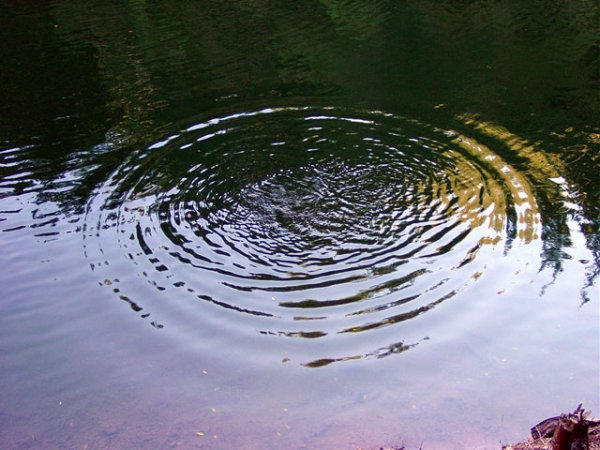

Numim oscilaţie mecanică o mişcare repetată de o parte şi de cealaltă a unei poziţii de echilibru.
Numim oscilaţie mecanică o mişcare repetată de o parte şi de cealaltă a unei poziţii de echilibru.
Dacă arunci o piatră în apa liniştită a unui lac, vei stârni mici valuri la suprafaţa apei, asemenea valurilor mării (figura 1A−1).

Fig. 1A-1. Mici valuri produse la suprafaţa apei de căderea unei pietre.
În curând, toată suprafaţa apei este în mişcare.
O frunză care pluteşte pe suprafaţa apei se mişcă repetat în sus şi în jos, deasupra şi sub nivelul iniţial al apei liniştite.
Numim oscilaţie mecanică o mişcare repetată de o parte şi de cealaltă a unei poziţii de echilibru.
Apa dintr−o mică porţiune de la suprafaţa apei şi frunza efectuează oscilaţii mecanice.
Numim oscilator mecanic corpul care efectuează o mişcare oscilatorie.
 Provocarea 1A−1
Provocarea 1A−1
Enumeră alte exemple de oscilatori mecanici pe care i−ai întâlnit. Discută aceste exemple cu ceilalţi.